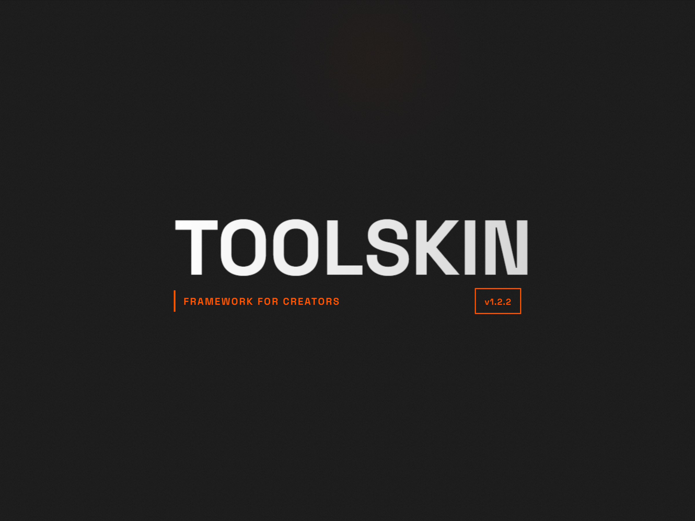
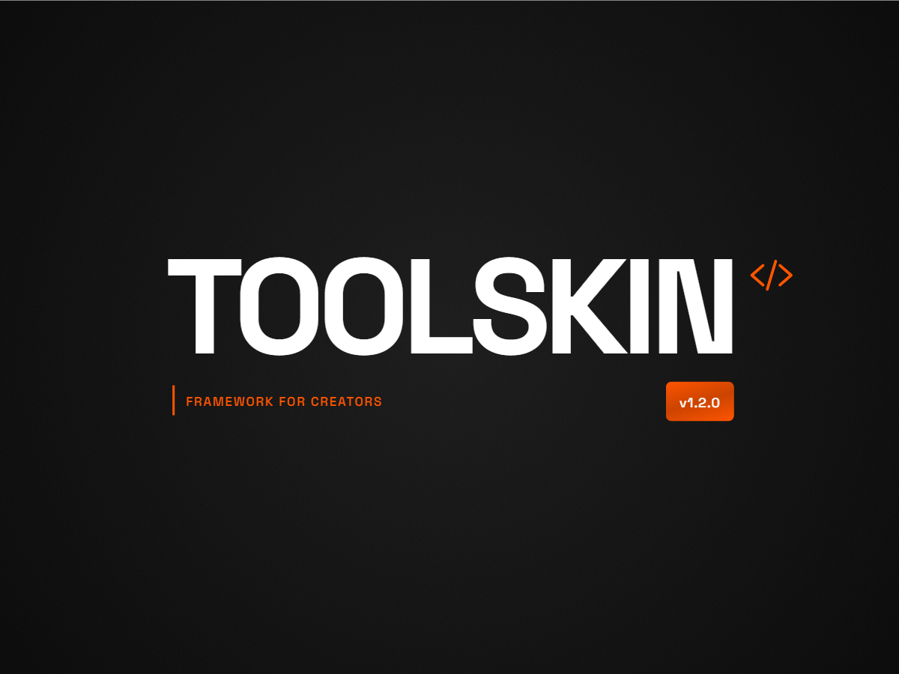
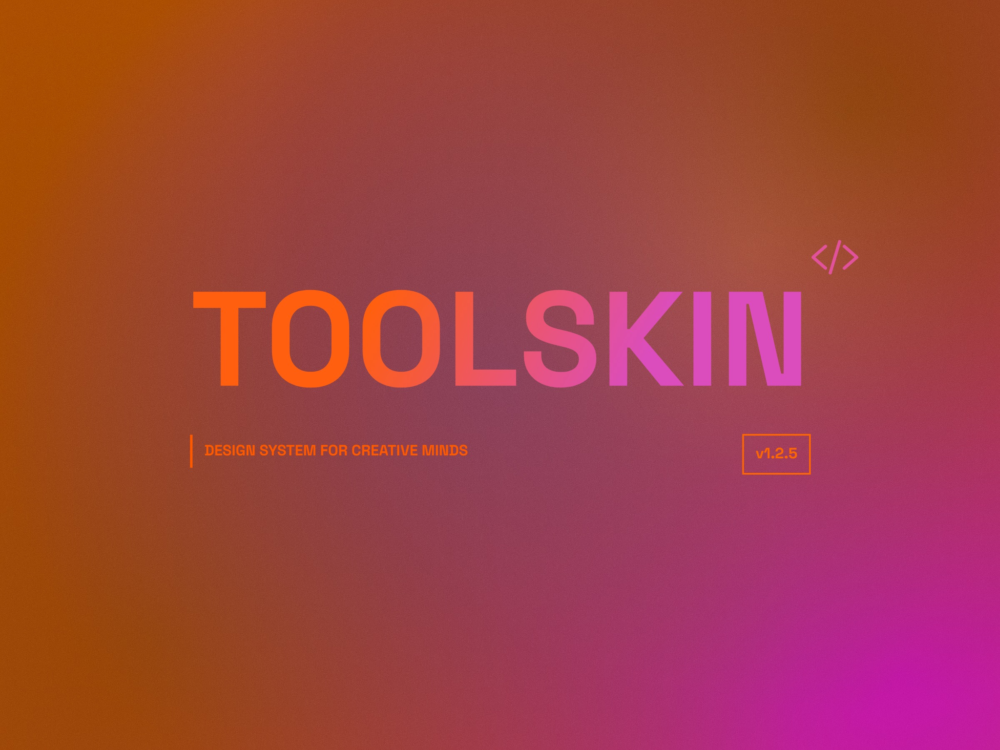
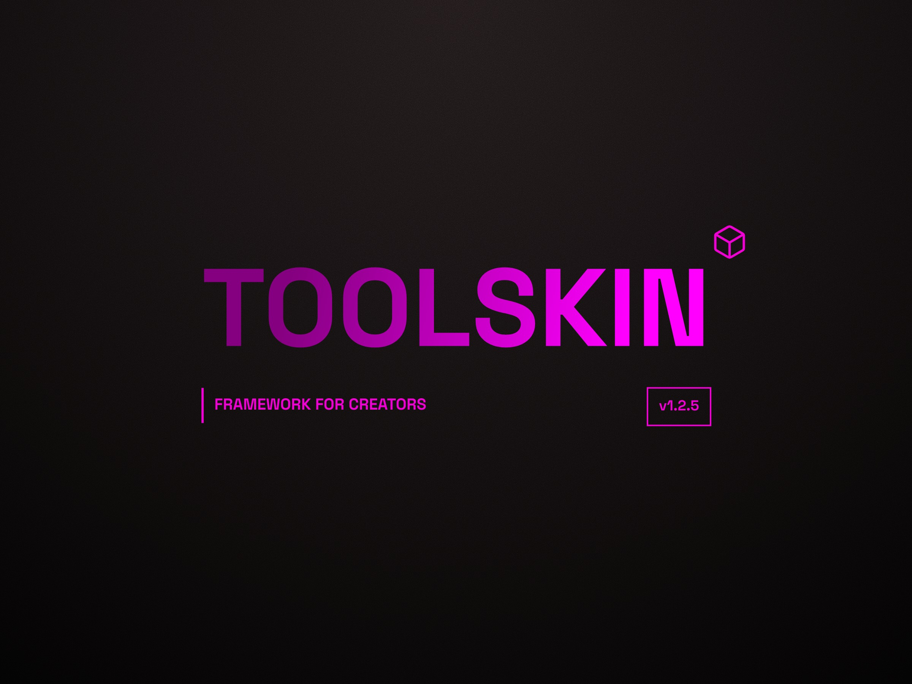
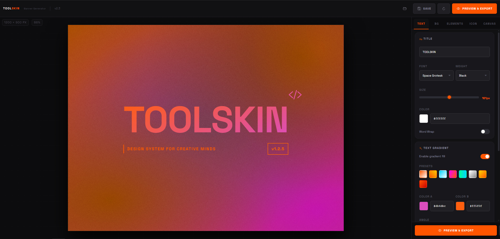
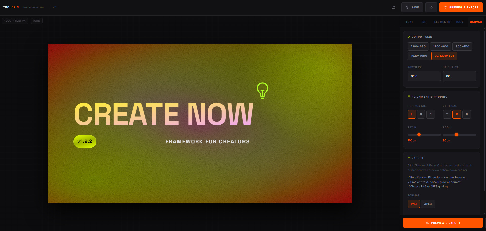
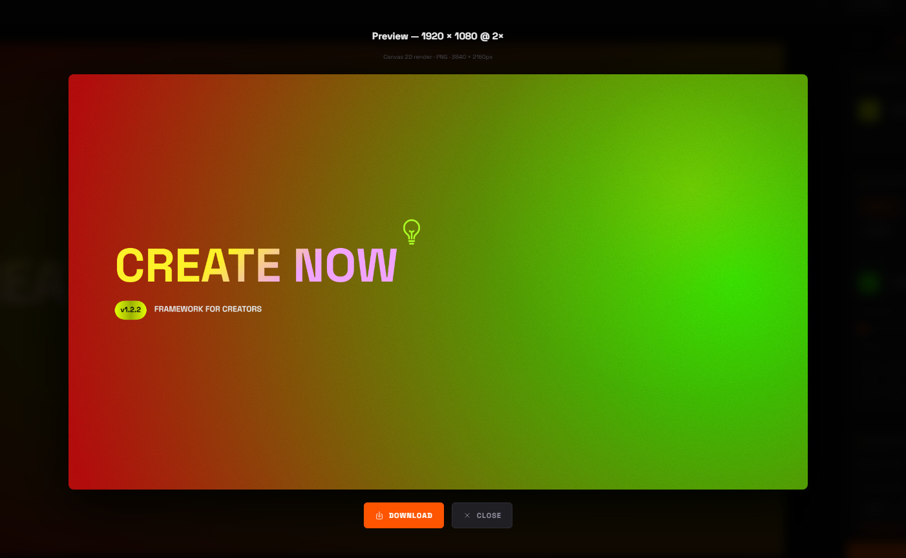

TOOLSKIN TOOL
Banner Generator
Create stunning, minimalistic and professional presentation banners in seconds. Pure CSS & Canvas 2D rendering — gradient text, noise textures, custom typography, icon picker, multiple presets. No dependencies. What you see is what you export.
Gradient Text with custom color stops
Multiple fonts & weight controls
Background presets & noise layers
Preset sizes: OG, HD, 4K & custom
Icon picker with 1400+ Ionicons
PNG / JPEG export at 2× resolution
Live preview with real-time controls
Save & load preset configurations








Social Links
Flexible social media icon components with multiple style variants.